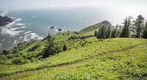

My Favorite Places
The Coolest Spots in Oregon
Cascade Head

This is one of the most beautiful spots along the Oregon Coast
- It overlooks the Salmon River Estuary
- You can hike here!
- It's owned by The Nature Conservancy
-
Learn more Here!
Enchanted Forest
Creepy, Silly, and Fun!
- A whimsically crafted fairytale theme park just north of Salem, OR
- The park was created by Roger Tofte in the 1960s and opened in 1971
- I was both fascinated and terrified by the Witch's mouth (pictured above) when I was a child.
-
Check out their Website!
Short Sands Beach
Beautiful Beach tucked away in Oswald West State Park